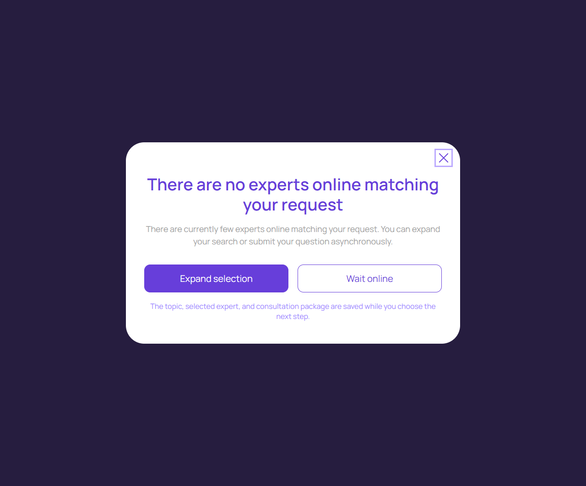

Нет подходящих экспертов
account/no-matching-experts.html
Сохранить контекст и дать расширить выбор/ждать.
| Когда открывается | Подбор вернул пустую выдачу |
|---|---|
| Данные | Исходные фильтры; выбранная тема; разрешенные варианты. |
| Сценарий | Expand selection ослабляет только явно показанные ограничения; Wait сохраняет запрос ожидания по согласованному правилу. |
| Переходы | Подбор эксперта · Канал уведомления |
«Wait online» не является гарантированной бронью и не оплачивается.
Общая и предметная логика. Снимки и подписи элементов — исходная редакция макета; поздние уточнения ТЗ имеют приоритет в своей области. Это не проверка текущего сайта.
Сопоставление с AskNebula
Существующие наблюдения 07–09.10.2026, без повторной проверки в этой передаче.
Нужна отдельная сверка соответствующего экрана/состояния референса. Отсутствие аналога не установлено.
Состояние 1280 · 1280 × 1062


Элементы и ожидаемые действия
| Элемент | Название в макете | Действие | Ожидаемый результат |
|---|---|---|---|
| E001 Виден | Close | Закрыть локальное окно или вернуться к инициатору; Stay отменяет намерение завершить. | Вернуть фокус и исходный контекст. Не выполнять оплату, удаление или Complete. При неизвестном результате платежа сначала сверить заказ. |
| E002 Виден | Expand selection | Открыть новый подбор или явно расширить выбранные ограничения. | Новый эксперт принимается только кликом клиента; предыдущая история не переносится другому эксперту. |
| E003 Виден | Wait online | Остаться в ожидании подтвержденной доступности/восстановления. | Не обещать бронь или срок без серверного основания; повтор не создает новую сессию. |
| E004 Виден | The topic, selected expert, and consultation package are saved while you choose the next step. | Подтвердить ознакомление с сохранением контекста ожидания. | Не покупать пакет и не создавать бронь; тема и выбранный эксперт остаются в текущем сценарии. |
Состояние 390 · 390 × 1062

Элементы и ожидаемые действия
| Элемент | Название в макете | Действие | Ожидаемый результат |
|---|---|---|---|
| E001 Виден | Close | Закрыть локальное окно или вернуться к инициатору; Stay отменяет намерение завершить. | Вернуть фокус и исходный контекст. Не выполнять оплату, удаление или Complete. При неизвестном результате платежа сначала сверить заказ. |
| E002 Виден | Expand selection | Открыть новый подбор или явно расширить выбранные ограничения. | Новый эксперт принимается только кликом клиента; предыдущая история не переносится другому эксперту. |
| E003 Виден | Wait online | Остаться в ожидании подтвержденной доступности/восстановления. | Не обещать бронь или срок без серверного основания; повтор не создает новую сессию. |
| E004 Виден | The topic, selected expert, and consultation package are saved while you choose the next step. | Подтвердить ознакомление с сохранением контекста ожидания. | Не покупать пакет и не создавать бронь; тема и выбранный эксперт остаются в текущем сценарии. |